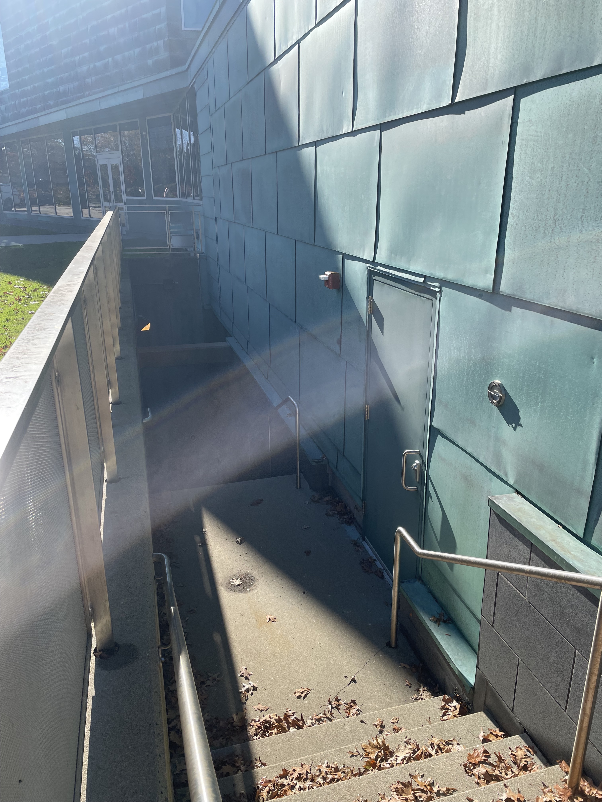

Evidence of Design Scavenger Hunt
I was tasked with walking around Brandeis campus, looking for designs that fit criteria such as able to be used with a disability, using a barrier, and design for enviornmental stability. Here's what I found:
Designs for Access:
1. Evidence of design for nagivation without one or more of the senses
Below are two examples of braille on campus. In the SSC, a moderm building, every sign has braille.
There were also braille signs in the gymnasium.
Finally, there was braille on the emergency button machines that no-one ever uses.
2. Evidence of design for forms of assistance, broadly defined
The first thing that came to mind were the elevators in both sherman and the faculty club, assisting people to move up stairs.
However, what I realized later were to other examples that I walked past. For instance in the gym there is a wall of personal trainers that you can contact. Additionally, at the entrance to campus there is a booth that is ideally (but not always) inhabited by someone that can give you directions to where to drive.
3. Evidence of design for aging, broadly defined
I once had a physics professor that was very old, and I saw him use these subtle handrails in Bassine to get down the stairs and into the lecture hall.
I started noticing handrails more, such as these that led to the gym. The handrails in Bassine were blocky and unconfortable, not to mention they were a bit too far too the side to feel natural to use. But these felt much better to use, being circular and right on the path.

4. Evidence of design for young children
The assignmend excluded parks or playgrounds, but I had to check out Lemberg anyway. I saw the classic playground fence gate that is a bit too high for children to open. But I also noted that the entire playground was enclosed in fenses.

These were both fairly obvious, but to hopefully take it a step deeper, I noted that the swings had been put up, presumably out of childrens' reach.

Outside of Sherman I saw a basketball hoop. This isn't necessarily just a design for children, since anyone can playbasketball, but this seemed like a good place to put it.

Finally, at the small department store on campus, I don't know if this is intentional, but the stuffed animals are at the bottom of thir rack, within reach and at eye level of children who may be interested.

5. Evidence of design for wheeled mobile hear (chairs, bikes, strollers, etc.)
The most first example I could think of were elevators, such as the elevators in the gym.
But then I started noticing accommodations for specific types of wheels, such as bike racks. There were some outside the SSC.

And some outside of the gym.

Designs Against Access:
6. Evidence of design with physical barriers
The classic example is here, where a barrier is placed to prevent a car from going into a pedestrian area.

In the SCC there is a ticket booth, but when there isn't a show, they put baloons in front of it to block it.
Behind the SSC, there is a raised platform with a loading bay, but when that bey isn't in use, they make sure the gate stays closed so no-one falls off of the platform.

Also, in the gym the entrance and exits are seperated so the people coming in have to swipe in by walking past the desk, but the people going out can just leave.
Similarly, in Sherman there is a door that locks from the outside so you can't get in without going past the front desk and using a meal swipe.
7. Evidence of design with lack of information
Underneath the SCC there is are some mechanical rooms that are locked and not labed. Presumably becuase everyone who needs to use it is already informed and the lack of signs makes it incconspicuous so no-one gets curious and wanters down there.
Outside of the SCC lies the bue booths, and when they are not in use they are closed and there there are no signs or graphics. This may not be a good example, however, since the lack of information isn't intentional as much as its just that there isn't any activity currently.

8. Evidence of design with absence of help
The trash compactor outside of the SCC and Bassine does not have any instructions to help you, presumably because they don't want just anyone operating it.
Design priorities in the built enviorment
9. Evidence of design for historical specificity.
I interpreted this design prioroty as building buildings in the same style. For example, all of the buildings in Massel quad are built with the same cohesive architecture, both exteriors and interiors.

10. Evidence of design for enviormental sustainability.
At the entrance to the university, these stop sings have lights that glow at night. They are powered by their own solar panels.
In the dining halls, to reduce the usage of one-time disposable doggy bags, green boxes are re-usable take-home boxes in which food can be taken from the dining halls.
11. Evidence of design for health and well-being
In the SCC the SSIS (Student Secuality Information Service) is an office wher eyou can get contraceptives and information on safe sex for free. Outside of the SCC there is a box of condoms and dental dams that you can take from even if the SSIS is closed. Personally, I think that having a stack of plan B would be a bit more helpful since that's something you may need to grab on the weekend even when they are closed.

A big part of health and well being at Brandeis is the nearby gym.
A more subtle but important example is the tarp outside of lemberg that creates shade for the children and staff in the playground.
12. Evidence of design for emergency services
There is a tunnel used by staff to transport trash to the dumpsters during the winter.
 In the side of this tunnel, there are doors that say "fire dept acess to hydrant" because there is a fire hydrant on the other side of the tunnel.
In the side of this tunnel, there are doors that say "fire dept acess to hydrant" because there is a fire hydrant on the other side of the tunnel.
Conclution
I had a lot of fun with this project, as it felt like seeing designs in action. I noticed some things that were and weren't designed wel, and I have a lot more appreciation for the design of the campus and how it could be improved.